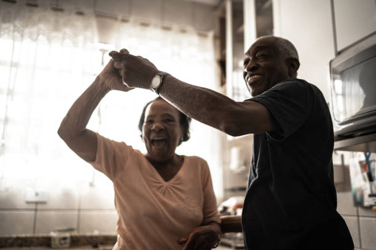

Dance, the movement of the body in a rhythmic way, usually to music and within a given space, for the purpose of expressing an idea or emotion, releasing energy, or simply taking delight in the movement itself. Dance is a powerful impulse, but the art of dance is that impulse channeled by skillful performers into something that becomes intensely expressive and that may delight spectators who feel no wish to dance themselves. These two concepts of the art of dance—dance as a powerful impulse and dance as a skillfully choreographed art practiced largely by a professional few—are the two most important connecting ideas running through any consideration of the subject. In dance, the connection between the two concepts is stronger than in some other arts, and neither can exist without the other.Although the above broad definition covers all forms of the art, philosophers and critics throughout history have suggested different definitions of dance that have amounted to little more than descriptions of the kind of dance with which each writer was most familiar. Thus, Aristotle’s statement in the Poetics that dance is rhythmic movement whose purpose is “to represent men’s characters as well as what they do and suffer” refers to the central role that dance played in classical Greek theatre, where the chorus through its movements reenacted the themes of the drama during lyric interludes.
Dance exercises combined with healthy nutrition will help you lose weight, boost your metabolism and stay in shape! However not all dances are the same when it comes to this topic. Usually it’s all about calories and how many of them you can burn during the class. So dancing Tango will probably won’t help you a lot in this case, whereas salsa or hip hop will bring your weight down a lot faster. Just follow the link to learn which dance styles are best for weight loss. One word of caution though, choose a dance style which makes you happy and you actually want to practice even if it’s not as energy intensive as you hoped it would be. Mental stress and self hatred leads to obesity a lot more often than an extra bite of some delicious food.
You don’t need to be a certain age. Any age is perfect to start dancing! At any age such physical activity will bring lots positive changes to your body and soul! As an adult it may seem difficult at first to make yourself go to your first dance class. If you’ve never danced before you’ll will probably be very self-conscious, shy and worry a lot about it, but you shouldn’t. Many adults who have never danced in their life come to dance classes in their 30s, 40s and 50s these days. It’s totally normal and there is nothing to be hesitant about. If you want to dance – just do it. If you are in your 60s or older you should still come to dance classes and enjoy your life as a dance student, however keep in mind that some dance styles require you to have a good physical health. It’s up you and probably your doctor (in case you have a certain health condition) to decide which dance style is more suitable for you. Argentine Tango or Bachata for example are just great for seniors. However Hip-hop or Zumba would probably be too much.